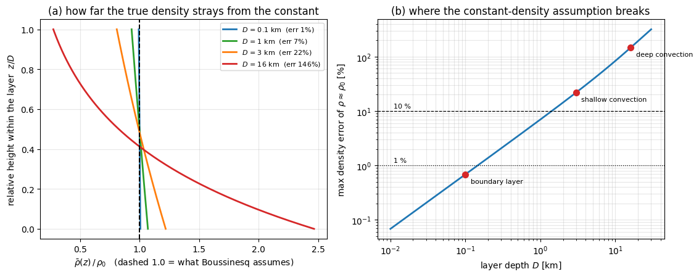

Boussinesq Approximation#
只有在「乘上 \(g\)」的地方，密度的微小變化才算數；其他所有地方，密度一律當成常數 \(\rho_0\)。
這條近似幾乎是整個大氣動力學的預設值 —— 你在推導裡看到 \(\nabla\cdot\mathbf{u} = 0\)、看到 \(\Phi \equiv p'/\rho_0\)、看到浮力被寫成 \(b = g\theta'/\theta_0\)，背後全都是它。但它同時也是最容易被記成一句口號、然後在深對流上翻車的近似。
這篇筆記要回答三件事：它到底砍掉了什麼、憑什麼可以砍、以及什麼時候不能砍。
一、先讓問題痛起來#
完整的可壓縮方程組長這樣：
數學上完全正確，但拿去跑數值模式會撞上兩個很實際的麻煩。
麻煩一：\(\rho\) 是一個要預報的四維場。 它掛在動量方程式每一項的前面，而且是用乘的。\(\rho\frac{D\mathbf{u}}{Dt}\) 這種「未知數乘未知數」的結構，讓整組方程式非線性得很徹底。
麻煩二（真正致命的）：聲波。 上面那組方程式允許空氣被壓縮、再彈回來 —— 那就是聲波，速度 \(c \approx 340\ \text{m}\cdot\text{s}^{-1}\)。但我們真正想看的東西，颱風風速頂多 \(50\ \text{m}\cdot\text{s}^{-1}\)、重力波也才幾十 \(\text{m}\cdot\text{s}^{-1}\)。而數值穩定度（CFL 條件）只看最快的那個波：
網格取 \(\Delta x = 1\ \text{km}\)，\(\Delta t\) 就被壓到 \(3\) 秒以下。你為了解析一個對你完全沒用、能量佔比又小到可以忽略的波，把整個模式的時間步長綁死了。
怎麼辦呢？ 注意我們要的不是「把聲波算得更快」，而是讓它從方程式裡徹底消失。
二、Boussinesq 的兩刀#
先把密度拆成「常數參考值」與「擾動」：
注意 \(\rho_0\) 是一個純粹的常數，不是 \(z\) 的函數 —— 這一點就是 Boussinesq 跟滯彈近似的分水嶺，第六節會再回來釘一次。
第一刀：慣性項與質量守恆裡，\(\rho \to \rho_0\)#
因為 \(\rho_0\) 是常數，它可以整個提到微分外面、然後兩邊除掉。連續方程式從一條帶時間微分的預報式，塌縮成一條沒有時間微分的約束式。
第二刀：只有乘上 \(g\) 的地方，\(\rho'\) 活下來#
你可能會覺得這很雙標：同一個 \(\rho'\)，在左邊被無情丟掉，在右邊卻被留著。憑什麼？
憑 \(g\) 很大。我們把量級真的算出來看（取颱風尺度 \(U \sim 50\ \text{m}\cdot\text{s}^{-1}\)、\(L \sim 10^{5}\ \text{m}\)、\(\rho'/\rho_0 \sim 10^{-2}\)）：
項 |
表達式 |
量級 \([\text{m}\cdot\text{s}^{-2}]\) |
|---|---|---|
慣性項本身 |
\(U^2/L\) |
\(2.5\times10^{-2}\) |
\(\rho'\) 對慣性項的修正 |
\(\left(\rho'/\rho_0\right)\left(U^2/L\right)\) |
\(2.5\times10^{-4}\) |
\(\rho'\) 對重力項的修正（浮力） |
\(g\left(\rho'/\rho_0\right)\) |
\(9.8\times10^{-2}\) |
同一個 \(10^{-2}\) 的密度擾動，進到浮力項被 \(g\) 放大成比慣性項本身還大；進到慣性項的修正裡，卻只有慣性項本身的 \(1\%\)。關鍵的比值是
所以「只有浮力項保留 \(\rho'\)」不是一條武斷的規定，而是尺度分析的結論：\(g\) 比 \(U^2/L\) 大了近 \(400\) 倍，它把一個本來該被忽略的小量，放大成了整個系統的主角。
三、適用條件：關鍵不是「密度變化小」，是「層要夠淺」#
Boussinesq 的成立條件有三條，而且第一條最容易被忽略。
條件 1（最關鍵）：層厚遠小於密度標高，\(D \ll H_\rho\)#
大氣的背景密度本來就隨高度指數遞減：
如果你研究的那一層厚度 \(D\) 跟 \(H_\rho\) 差不多，「密度是常數」就不是小擾動的問題了 —— 是背景場本身就差了好幾倍。
這一條跟流動快不快、擾動大不大完全無關，純粹是幾何問題。第五節會把這個誤差實際算出來。
條件 2：低馬赫數，\(M = U/c \ll 1\)#
流體慢到空氣有時間「讓開」，而不是被「撞扁」。熱力學上，動能造成的密度相對變化正比於 \(M^2\)：
大氣裡 \(U \sim 50\ \text{m}\cdot\text{s}^{-1}\)、\(c \approx 340\ \text{m}\cdot\text{s}^{-1}\)，\(M \approx 0.15\)、\(M^2 \approx 0.02\)。
條件 3：密度擾動本身要小，\(\left|\rho'/\rho_0\right| \ll 1\)#
\(3\ \text{K}\) 的位溫擾動配 \(300\ \text{K}\) 的背景，\(\rho'/\rho_0 \sim 10^{-2}\)。
條件 2 與條件 3，大氣幾乎永遠滿足，所以大氣科學裡很少有人擔心它們。
三條裡面，大氣真正會踩線的只有第一條。所以「Boussinesq 什麼時候會壞掉」這個問題，答案幾乎總是同一個：因為你的系統長太高了。
四、砍掉 \(\partial\rho/\partial t\) 換來什麼#
回頭看第一刀的結果 \(\nabla\cdot\mathbf{u} = 0\)，它跟原式最大的差別是：時間微分不見了。
聲波的本質，就是密度隨時間快速地壓縮與回彈。把 \(\partial\rho/\partial t\) 從方程式裡拿掉，等於直接宣告「空氣沒有彈性」—— 聲波這個模態在數學上不存在了，而不是「存在但很小」。\(\Delta t\) 的上限於是從聲速（\(340\ \text{m}\cdot\text{s}^{-1}\)）交棒給重力波或平流速度（幾十 \(\text{m}\cdot\text{s}^{-1}\)），可以放大十倍上下。
但天下沒有白吃的午餐，代價是：氣壓從預報變數變成了診斷變數。
原本 \(p\) 可以由狀態方程式從 \(\rho\) 與 \(T\) 直接算出來，而 \(\rho\) 由連續方程式往前推。現在 \(\nabla\cdot\mathbf{u} = 0\) 變成一條約束，\(p'\) 的角色也跟著變了 —— 它成了「為了讓速度場隨時滿足這條約束，所必須存在的那個壓力場」。把動量方程式取散度、再用上約束，就會得到
一條 Poisson 方程式。每一個時間步都要解一次橢圓方程式，才拿得到氣壓。
這就是所有數值模式動力核心的分水嶺：留著聲波的（compressible / split-explicit）用小 \(\Delta t\) 硬推；濾掉聲波的（Boussinesq / anelastic）可以用大 \(\Delta t\)，但每一步都要背一個橢圓解算器。
另外提醒一個容易誤讀的地方：\(\nabla\cdot\mathbf{u} = 0\) 並不是從 \(D\rho/Dt = 0\) 推出來的，它是尺度分析的結果。這兩件事在 Boussinesq 系統裡剛好長得一樣，但來歷完全不同 —— 第六節①會再談。
五、數值驗證#
條件 1 說「\(D \ll H_\rho\)」，但 \(\ll\) 到底是多少？\(1\ \text{km}\) 算淺嗎？
我們把它變成一個看得到的數字。設定一個等溫背景大氣 \(\bar{\rho}(z) = \rho_s e^{-z/H_\rho}\)，對一個從地面往上厚度為 \(D\) 的氣層，取層平均密度當作 Boussinesq 的那個 \(\rho_0\)，然後問：層內真實密度離這個常數最遠有多遠？
（這是把「\(D \ll H_\rho\)」具體化的其中一種量法，不是形式上的誤差上界；不同的取法會讓門檻的數字前後移動，但量級與趨勢是一樣的。）資料每次執行時即時生成，沒有任何檔案被存下來。
import numpy as np
import matplotlib.pyplot as plt
G, RD, T0 = 9.81, 287.0, 250.0 # 重力加速度 [m/s^2]、乾空氣氣體常數 [J/kg/K]、等溫背景溫度 [K]
H = RD * T0 / G # 密度標高 H = R_d T / g [m]
RHO_S = 1.2 # 地面密度 [kg/m^3]
def rho_bar(z):
"""等溫大氣的背景密度剖面。"""
return RHO_S * np.exp(-z / H)
def boussinesq_error(D):
"""把層平均密度當成常數 rho_0 時，層內密度的最大相對誤差。"""
D = np.asarray(D, dtype=float)
rho0 = RHO_S * (H / D) * (1.0 - np.exp(-D / H)) # 層平均密度（解析積分）
dev_bot = np.abs(RHO_S - rho0) # 誤差極值只會出現在上下邊界
dev_top = np.abs(RHO_S * np.exp(-D / H) - rho0)
return np.maximum(dev_bot, dev_top) / rho0
def crossing(target):
"""用二分法找誤差達到 target 的層厚。"""
lo, hi = 1.0, 5.0e4
for _ in range(200):
mid = 0.5 * (lo + hi)
lo, hi = (mid, hi) if boussinesq_error(mid) < target else (lo, mid)
return 0.5 * (lo + hi)
# ===== 主程式執行區 =====
print("密度標高 H = R_d T / g = %.0f m (T = %.0f K)" % (H, T0))
print()
print(" 層厚 D rho_bar(D)/rho_s rho = rho_0 的最大誤差")
for D, name in [(100.0, "地表邊界層"), (1000.0, "淺層邊界層"),
(3000.0, "淺對流"), (16000.0, "深對流/颱風")]:
print(" %6.0f m (%-10s) %5.3f %6.1f %%"
% (D, name, np.exp(-D / H), 100 * boussinesq_error(D)))
print()
print("誤差達 1%% 的層厚：D = %.0f m" % crossing(0.01))
print("誤差達 10%% 的層厚：D = %.0f m" % crossing(0.10))
Ds = np.logspace(1, np.log10(3.0e4), 400)
fig, ax = plt.subplots(1, 2, figsize=(11.5, 4.6))
zeta = np.linspace(0, 1, 200) # 層內的相對高度 z/D
for D, c in [(100.0, "C0"), (1000.0, "C2"), (3000.0, "C1"), (16000.0, "C3")]:
rho0 = RHO_S * (H / D) * (1.0 - np.exp(-D / H)) # 該層的層平均密度
ax[0].plot(rho_bar(zeta * D) / rho0, zeta, lw=2, color=c,
label=r"$D$ = %g km (err %.0f%%)" % (D / 1000.0, 100 * boussinesq_error(D)))
ax[0].axvline(1.0, color="k", lw=1.4, ls="--")
ax[0].set_xlabel(r"$\bar{\rho}(z)\,/\,\rho_0$ (dashed 1.0 = what Boussinesq assumes)")
ax[0].set_ylabel("relative height within the layer $z/D$")
ax[0].set_title("(a) how far the true density strays from the constant")
ax[0].legend(fontsize=8); ax[0].grid(alpha=.3)
ax[1].plot(Ds / 1000.0, 100 * boussinesq_error(Ds), lw=2, color="C0")
ax[1].set_xscale("log"); ax[1].set_yscale("log")
for lvl, ls in [(1.0, ":"), (10.0, "--")]:
ax[1].axhline(lvl, color="k", lw=0.9, ls=ls)
ax[1].text(1.1e-2, lvl * 1.15, "%g %%" % lvl, fontsize=8)
for D, name in [(0.1, "boundary layer"), (3.0, "shallow convection"), (16.0, "deep convection")]:
ax[1].plot(D, 100 * boussinesq_error(D * 1000.0), "o", ms=7, color="C3")
ax[1].annotate(name, (D, 100 * boussinesq_error(D * 1000.0)),
textcoords="offset points", xytext=(6, -10), fontsize=8)
ax[1].set_xlabel("layer depth $D$ [km]")
ax[1].set_ylabel(r"max density error of $\rho \approx \rho_0$ [%]")
ax[1].set_title("(b) where the constant-density assumption breaks")
ax[1].grid(alpha=.3, which="both")
plt.tight_layout()
plt.show()
密度標高 H = R_d T / g = 7314 m (T = 250 K)
層厚 D rho_bar(D)/rho_s rho = rho_0 的最大誤差
100 m (地表邊界層 ) 0.986 0.7 %
1000 m (淺層邊界層 ) 0.872 7.0 %
3000 m (淺對流 ) 0.664 21.9 %
16000 m (深對流/颱風 ) 0.112 146.4 %
誤差達 1% 的層厚：D = 146 m
誤差達 10% 的層厚：D = 1417 m

數字比想像中嚴格：
\(D = 100\ \text{m}\)（地表邊界層）：誤差 \(0.7\%\)。 完全沒問題，這是 Boussinesq 的主場。
\(D = 1\ \text{km}\)：誤差 \(7\%\)。 已經不是可以完全無視的量了。誤差要壓在 \(1\%\) 以內，層厚得薄到 \(\mathbf{146\ \text{m}}\)；要壓在 \(10\%\) 以內，上限大約是 \(\mathbf{1.4\ \text{km}}\)。
\(D = 3\ \text{km}\)（淺對流）：誤差 \(22\%\)。
\(D = 16\ \text{km}\)（深對流／颱風）：誤差 \(146\%\)。 頂層的密度只剩地面的 \(11\%\)，「常數密度」這句話已經沒有任何意義了。
圖 (a) 把這件事畫成了扇形：層越厚，真實密度剖面離那條「Boussinesq 假設的垂直虛線」偏得越開。圖 (b) 則說明這是一條乾淨的冪次關係 —— 在 \(D \ll H_\rho\) 的區間裡 \(\varepsilon \approx D/(2H_\rho)\)，誤差直接正比於層厚。
一句話：Boussinesq 在大氣裡的合法領地，大約就是 \(1\ \text{km}\) 以下。超過這個高度，你需要的是滯彈近似。
六、三個容易犯的錯#
① 把 Boussinesq 講成「空氣是不可壓縮流體」#
\(\nabla\cdot\mathbf{u} = 0\) 在流體力學裡確實叫 incompressible flow，但這句話描述的是流動的性質，不是物質的性質。空氣當然壓得扁 —— 拿打氣筒壓一下就知道了。\(\nabla\cdot\mathbf{u} = 0\) 真正的意思是：在這個尺度、這個速度下，流體來不及被壓扁，所以它「表現得」像不可壓縮。
有一個很好玩的檢驗方式：Boussinesq 系統裡的聲速是多少？無限大。 壓力訊號瞬間傳遍全場 —— 這正是第四節那條 Poisson 方程式的物理意義（橢圓方程式的解，任何一點都受全場影響）。真正不可壓縮的物質才有無限大的聲速，而空氣是 \(340\ \text{m}\cdot\text{s}^{-1}\)。
所以我們並不是在描述空氣，我們是在描述一個**「假裝自己是水」的空氣模型**。
② 以為「\(\rho_0\) 是常數」等於「密度沒有變化」#
恰恰相反：密度變化是這個系統唯一的驅動力來源。沒有 \(\rho'\)，就沒有浮力、沒有對流、沒有重力波、沒有 \(N^2\)，整組方程式會退化成一鍋沒有溫度的均質流體。
第二節的表已經說清楚了：\(\rho'\) 沒有被刪掉，它只是被限制只能從浮力這一道門進場。
③ 把 Boussinesq 記成「\(\rho\) 只跟高度 \(z\) 有關」#
這是最常見的混淆。\(\rho \to \bar{\rho}(z)\) 是滯彈近似（Anelastic），不是 Boussinesq。兩者的分界線其實很好認：
Boussinesq |
Anelastic |
|
|---|---|---|
參考密度 |
常數 \(\rho_0\) |
只隨高度變化的 \(\bar{\rho}(z)\) |
連續方程式 |
\(\nabla\cdot\mathbf{u} = 0\) |
\(\nabla\cdot\left(\bar{\rho}\mathbf{u}\right) = 0\) |
適用層厚 |
\(D \ll H_\rho\) |
\(D \sim H_\rho\) 甚至更深 |
聲波 |
濾掉 |
也濾掉 |
氣壓 |
診斷變數（解橢圓方程式） |
診斷變數（解橢圓方程式） |
最快的辨認法：看 \(\rho\) 有沒有被關在偏微分符號裡面提不出來。提得出來、消得掉的是 Boussinesq；關在裡面的是 Anelastic。
七、什麼時候該換成 Anelastic#
回到第三節的結論：Boussinesq 唯一真的會踩線的是「\(D \ll H_\rho\)」。所以判斷準則很單純 —— 量一下你的系統有多高。
邊界層、海洋混合層、實驗室水槽、淺積雲（\(D \lesssim 1\ \text{km}\)）：放心用 Boussinesq。
深對流、颱風、整層對流層的波動（\(D \sim 10\text{–}16\ \text{km}\)）：背景密度已經掉到地面的 \(10\%\) 上下，該換 Anelastic Approximation 了 —— 把 \(\rho_0\) 放寬成 \(\bar{\rho}(z)\)，但一樣把聲波關在門外。
不過要補一句：即使在深對流的場合，很多推導還是會刻意先用 Boussinesq 起手。不是因為它比較準，而是因為它能讓方程式乾淨到可以看出物理結構。垂直結構方程式 就是這樣的例子：先在 Boussinesq 下把 Sturm–Liouville 結構解出來，理解了「等效深度」「正壓／斜壓模態」之後，再回頭把 \(\bar{\rho}(z)\) 加進去。
先求看得懂，再求算得準。
應用#
把三維加熱問題壓成一條「壓力–輻散」方程式 —— 靠 \(\nabla\cdot\mathbf{u} = 0\) 才能寫成 \(\underbrace{\left(\frac{\partial u}{\partial x} + \frac{\partial v}{\partial y}\right)}_{\text{水平輻散}} + \frac{\partial w}{\partial z} = 0\)，把 \(w\) 用擾動氣壓診斷掉。
沒有 Boussinesq 會怎樣： 連續方程式是 \(\nabla\cdot\left(\bar{\rho}\mathbf{u}\right) = 0\)，會多出一個 \(w\,\partial_z\ln\bar{\rho}\) 消不掉。垂直結構方程式的 Sturm–Liouville 權重函數就從 \(w(z) = 1\) 變成 \(\bar{\rho}(z)\)，正交關係得帶密度權重，連 \(\Psi_0\) 都不再是嚴格的常數。
把密度擾動翻譯成位溫擾動 —— 該檔【假設 3】用 \(\rho'/\rho_0 \approx -\theta'/\theta_0\)，才得到乾淨的 \(\partial\phi/\partial z = g\theta'/\theta_0\)。
沒有 Boussinesq 會怎樣： 該檔【已知 5】裡的 \(\left(1 - R_d/c_p\right)P'/P_0\) 消不掉，浮力就不能只用 \(\theta'\) 表示，靜力平衡的右邊會多掛一個氣壓擾動項。
把浮力寫成 \(b = g\theta/\theta_0\) 這種能自由進出微分的形式 —— 需要 \(\theta_0\) 是常數。
沒有 Boussinesq 會怎樣： \(g/\theta_0\) 提不出微分符號，PV 與 PVb 的對應關係會多出 \(\bar{\theta}(z)\) 的垂直梯度項。
整個熱帶波動理論的起點 —— 垂直模態分解、等效深度、Kelvin 波與 Rossby 波，都是在 Boussinesq 系統上長出來的。
沒有 Boussinesq 會怎樣： 每一個垂直模態不再對應一個乾淨的淺水系統，「等效深度」這個概念也就失去了它最直觀的意義。
參考資料#
[1]Anelastic Approximation（本知識庫） —— 層太厚的時候該換的那一個近似
[2]垂直模態分解（本知識庫） —— Boussinesq 系統最漂亮的應用
[3]垂直結構方程式與模態投影（本知識庫） —— 從線性化 Boussinesq 到模態投影的逐步推導
[4]擾動場的靜力平衡（本知識庫） —— \(\rho'/\rho_0 \approx -\theta'/\theta_0\) 的完整尺度分析
[5]雷諾數（本知識庫） —— 另一個由尺度分析決定「哪一項可以丟」的例子
[6] Boussinesq, J. (1903), Théorie analytique de la chaleur, Vol. 2, Gauthier-Villars —— 近似的原始出處
[7] Spiegel, E. A. & Veronis, G. (1960), On the Boussinesq approximation for a compressible fluid, Astrophys. J., 131, 442-447 —— 第一篇把成立條件（特別是 \(D \ll H_\rho\)）講清楚的系統性分析
[8] Vallis, G. K. (2017), Atmospheric and Oceanic Fluid Dynamics, 2nd ed., Ch. 2 —— Boussinesq 與 anelastic 的並列推導